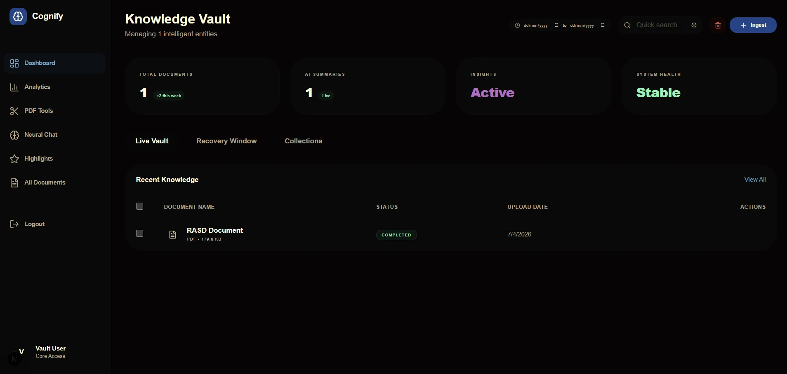

Cognify
La conoscenza personale diventa ricercabile.
Un secondo cervello che legge i tuoi documenti. Una pipeline asincrona estrae, riassume, classifica e crea gli embedding dei file, con ricerca semantica e risposte corredate di fonti nell’intero archivio.
Django · Next.js · Celery · Transformers
Dentro Cognify
Intelligenza documentale
Cognify è un sistema full-stack per la gestione della conoscenza personale: un secondo cervello che legge i tuoi documenti. PDF scansionati, immagini e file di testo entrano in una pipeline asincrona di worker Celery per l’elaborazione.
OpenCV e Tesseract OCR preparano le immagini ed estraggono il testo. DistilBART lo riassume, un classificatore MNLI zero-shot assegna gli argomenti e Sentence-BERT crea embedding semantici per la ricerca e l’analisi.
Uno spazio per la conoscenza
Il sistema Next.js 16 riunisce in una dashboard un archivio della conoscenza, analisi con Recharts e strumenti PDF nel browser per dividere, unire e riordinare i documenti.
Il versionamento conserva le relazioni tra le versioni dei documenti. Modalità riservata, recupero dei file eliminati, raccolte, annotazioni, segnalibri e note tengono in ordine documenti e citazioni.
Recupero e risposte
La ricerca per similarità coseno trova il significato nei documenti, oltre alle sole corrispondenze tra parole chiave. Nella chat RAG, RoBERTa genera risposte con citazioni a partire dai passaggi più rilevanti dell’archivio.
Caricamento → OCR → Sintesi → Classificazione → Embedding → Completato
Accesso e operatività
Il sistema Django REST garantisce nel backend autenticazione JWT, isolamento dei dati per utente in ogni query e registrazione di tutte le azioni.
35 test automatici, orchestrazione con Docker Compose e metriche Prometheus sulla latenza dei worker supportano l’implementazione. Licenza MIT.
Tecnologie utilizzate Python, Django, Next.js, Celery, Transformers, Sentence-BERT, Docker, Prometheus